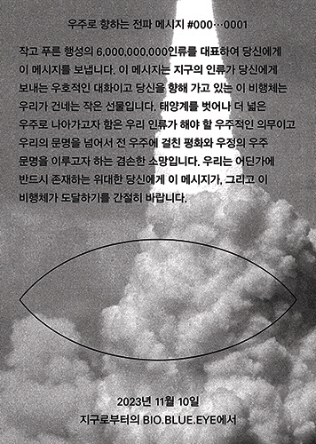
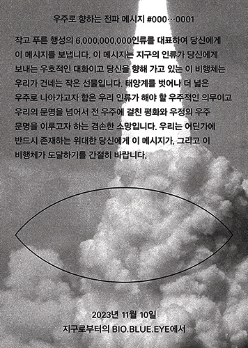

‘마음’과 ‘음ㅓㅁ’의 비침과 이음.
Reflecting and Connecting of ‘Mind’ and ‘du!W’

《씽크홀x띵크홀》은 싱크홀에서 발생한 의문의 실종사건을 둘러싼 ‘생각의 구멍’에 대한 이야기이다. 생각의 구멍이란 현상을 구성하는 다양한 사실들에 대한 개별적 이해로 발생하는 인지적 오류를 지칭한다. 이야기 밖의 현실 속에서, 우리 각각의 생각의 구멍은 어떤 모습일까.
BIO.BLUE.EYE
 

1. 이 프로젝트는 우리의 문명을 넘어서 더 큰 우주 문명을 이루고자 하는 소망의 공상 과학 프로젝트다. 2. 이 프로젝트는 지구의 인류가 외계 지적 생명체에게 건네는 대화이며 부탁이고, 선물이다. 3. 이 프로젝트는 검증된 과학적 사실과 검증되지 않은 과학적 가설로 이루어져 있다.
1. This project is a science fiction project that aims to achieve a bigger universe beyond our civilization. 2. This project is a conversation that humans give to space, and it is a gift. 3. This project is made of proven scientific facts and untested scientific hypothesis.
<서체-주의 ; 나를 벗다>는 사회문화 현상, 서체, 그리고 나라는 3가지 시점을 통해 각각의 본질을 알고자 하는 작업이다. 편견, 허세, 대중에서 벗어나 소수를 고립시키는 다수를 경계한다. 이와 동시에 디자이너로써 본질을 알고, 사회와 문화의 문제를 해결하려 한다.
<Font-ism ; take off myself> is work about searching essence through three viewpoints - social and cultural phenomenon, typeface, and myself. escape from prejudices, snobism, and the majority, I look out mass who isolate few. At the same time, I try to aware of the nature as a designer and solve social and cultural problems.